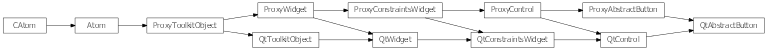
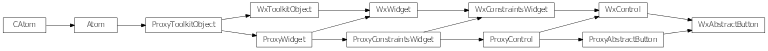

Bases: enaml.widgets.control.Control
A base class for creating button-like controls.
The text to use as the button’s label.
The source url for the icon to use for the button.
The size to use for the icon. The default is an invalid size and indicates that an appropriate default should be used.
Whether or not the button is checkable. The default is False.
Whether a checkable button is currently checked.
Fired when the button is pressed then released. The payload will be the current checked state. This event is triggered by the proxy object when the button is clicked.
Fired when a checkable button is toggled. The payload will be the current checked state. This event is triggered by the proxy object when a togglable button is toggled.
Buttons hug their contents’ width weakly by default.
A reference to the ProxyAbstractButton object.

Bases: enaml.qt.qt_control.QtControl, enaml.widgets.abstract_button.ProxyAbstractButton
A Qt implementation of the Enaml ProxyAbstractButton.
This class can serve as a base class for widgets that implement button behavior such as CheckBox, RadioButton and PushButtons. It is not meant to be used directly.
A reference to the widget created by the proxy
Implement in a subclass to create the widget.
Initialize the button widget.
The signal handler for the ‘clicked’ signal.
The signal handler for the ‘toggled’ signal.
Sets the widget’s text with the provided value.
Set the icon on the widget.
Sets the widget’s icon size.
Sets whether or not the widget is checkable.
Sets the widget’s checked state with the provided value.

Bases: enaml.wx.wx_control.WxControl, enaml.widgets.abstract_button.ProxyAbstractButton
A Wx implementation of an Enaml ProxyAbstractButton.
This class can serve as a base class for widgets that implement button behavior such as CheckBox, RadioButton and PushButtons. It is not meant to be used directly.
Implement in a subclass to create the widget.
Initialize the button widget.
The event handler for the clicked event.
| Parameters: | event (wxEvent) – The wx event object. This is ignored by the handler. |
|---|
The event handler for the toggled event.
| Parameters: | event (wxEvent) – The wx event object. This is ignored by the handler. |
|---|
Sets the widget’s text with the provided value.
Sets the widget’s icon to the provided image
This is not supported on wx.
Sets the widget’s icon size to the provided tuple
This is not supported on wx.
Sets whether or not the widget is checkable.
Returns the checked state of the widget.
Sets the widget’s checked state with the provided value.